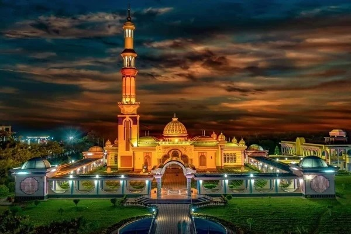
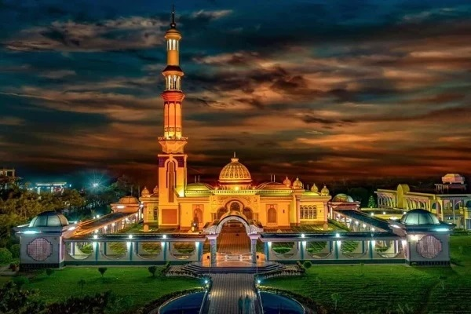

Barishal Division
Barishal Division is one of the eight administrative divisions of Bangladesh. Located in the south-central part of the country, it has an area of 13,644.85 km2 (5,268.31 sq mi), and a population of 8,325,666 at the 2011 Census. It is the least populous Division within the entirety of Bangladesh. It is bounded by Dhaka Division on the north, the Bay of Bengal on the south, Chittagong Division on the east and Khulna Division on the west. The administrative capital, Barisal city, lies in the Padma River delta on an offshoot of the Arial Khan River. Barisal division is criss-crossed by numerous rivers that earned it the nickname Dhan-Nodi-Khal, Ei tin-e Borishal (rice, river and canal built Barishal
History
In early times the Barisal region was composed of an amalgamation of marshlands formed by the merging of islands brought into existence and built up by alluvial soils washed down the great channels of the combined Brahmaputra-Ganges-Meghna river systems. In the early 13th century, Muhammad bin Bakhtiyar Khalji led the Muslim conquest of Barisal, and soon later Muhammad bin Tughluq completely conquered eastern Bengal. The Hindu chieftains from northwest Bengal were dislodged from power and they dispersed over Barisal region and founded the kingdom of Bakla. During the Mughal intervention in Bengal, Hindu society was concentrated to northern and western Barisal (known as Bakarganj). Barisal's southern portion was still covered by forests and laced with lagoons. The northwest was also the only part of Bakarganj where the Hindu population exceeded Muslims in early British censuses.
Mughal period
Barisal saw a second wave of immigration in the late 17th and early 18th centuries. This time, it was Muslim pioneers who assumed the leading role. Establishing Dhaka as the provincial Mughal capital of the region, in the early 17th century the Barisal region (known as Sarkar Bakla to Mughals) was more accessible to businessmen and developers than at any previous time. However, piracy in this region along the coasts and rivers of southeastern Bengal by Arakanese and renegade Portuguese seamen inhibited any sustained attempts by Mughal governors to push into the Barisal forests. After 1666, when Mughal naval forces cleared the Meghna estuary of such external threats, the Barisal interior lay ripe for colonization. Land developers acquired grants of plots of land, taluq (তালুক), from provincial authorities. Abundant and easily obtainable by purchase from the late 17th century these grants tended to be regarded by their possessors taluqdar (তালুকদার). As taluqdars brought their taluqs into agricultural production, these men passed up the land revenue through a class of non-cultivating intermediaries, or zamindar (জমিদার). Zamindars typically resided in the provincial capital, where they had ready access to the chief provincial revenue officer, or dewan (দেওয়ান).

 
